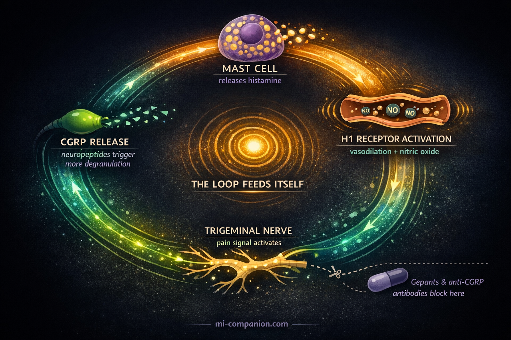

By Rustam Iuldashov
30 years lived experience with chronic migraine | Sources: 25 peer-reviewed references including Clinical Nutrition (n=100 RCT), Journal of Physiology and Biochemistry (n=198), The Journal of Headache and Pain (65 studies reviewed) | Last updated: March 2026
Medical Review: This content is based on peer-reviewed research from The Journal of Headache and Pain, Clinical Nutrition, Journal of Physiology and Biochemistry, Molecular Pain, Biomedicines, Frontiers in Neurology, Drug Discovery Today, Nutrients, and Journal of Clinical Medicine.
Important Notice: This article is for informational purposes only and does not replace professional medical advice. The author is not a licensed physician or healthcare professional. Always consult your doctor before starting an elimination diet or supplement regimen.
Key Takeaways
- Histamine is a known migraine trigger that activates the same mast cell–CGRP pain loop targeted by modern migraine drugs[1, 9, 10, 14]
- 87% of migraine patients in one study had DAO enzyme levels below normal, suggesting widespread impairment of histamine breakdown[8]
- Fermented, aged, and leftover foods are the highest histamine sources — and many are staples of wellness-oriented diets[6, 16, 17]
- Genetic variants in the DAO gene are associated with increased migraine risk, meaning some people are biologically predisposed[23]
- A 2–4 week low-histamine elimination diet is the gold standard for testing sensitivity, with 73% of chronic headache patients improving in one trial — the goal is to find your threshold, not restrict forever[20, 21]
- DAO supplementation reduced migraine duration by 1.4 hours in the first randomized trial, but larger studies are needed[22]
- Freshness and storage are critical: freeze leftovers immediately, choose fresh over canned, and favor boiling or steaming over grilling[16, 17, 19]
You did everything right.
You swapped processed food for fermented vegetables. Replaced soda with kombucha. Built your Saturday mornings around avocado toast and aged Gouda. You ate the way the wellness blogs told you to eat.
And your migraines got worse.
If that sounds familiar, the problem might not be stress or sleep or screen time. It might be hiding inside the very foods you chose because they’re healthy. The culprit has a name: histamine. And your body may have lost the ability to handle it.
The Molecule Your Body Can’t Keep Up With
Histamine is one of your body’s most versatile chemical messengers — orchestrating immune responses, regulating stomach acid, keeping your brain alert.[1, 2] In a healthy gut, dietary histamine gets neutralized almost instantly by an enzyme called diamine oxidase, or DAO, which lines your small intestine like a chemical checkpoint.[3, 4]
When DAO works, you never notice histamine. When it doesn’t, histamine accumulates. Flushing. Gut cramps. Congestion. And for many people — migraine.[5, 6]
Researchers call this histamine intolerance, or HIT — and it’s important to understand what it is not. Unlike a true food allergy, which triggers an immediate IgE-mediated immune response to a specific food, histamine intolerance is a cumulative metabolic problem. There’s no single allergen. The issue is total histamine load exceeding your body’s capacity to break it down.[3, 6, 7]
HIT affects an estimated 1 to 3% of the general population.[6, 7] Among people with migraine, the numbers look very different. In one cross-sectional study, 87% of episodic migraine patients had DAO levels below the clinical threshold — compared to 44% of headache-free controls. Average DAO activity in the migraine group was significantly lower: 64.5 versus 91.9 HDU/ml (p < 0.0001).[8]
The broken gatekeeper: 87% of migraine patients in a cross-sectional study (n=198) had DAO enzyme activity below normal — compared to 44% of headache-free controls. Average DAO activity was significantly lower in the migraine group: 64.5 vs. 91.9 HDU/ml (p < 0.0001).[8]
The Feedback Loop That Hijacks Your Brain
To understand why histamine triggers migraine, you need to meet two key players: mast cells and CGRP.
Mast cells are immune sentinels packed with histamine, stationed throughout your body — including the meninges, the delicate membranes surrounding your brain.[9, 10] Think of them as smoke detectors loaded with inflammatory chemicals. When they activate, they degranulate: they dump histamine into the surrounding tissue.
Here’s where migraine begins. Histamine binds to H1 receptors on meningeal blood vessels, triggering vasodilation and the release of nitric oxide — a known migraine provoker.[1, 11] But that’s only the opening act.
The real damage comes from a feedback loop. Histamine activates sensory nerve endings in the trigeminal system — your brain’s main pain highway. Those nerves respond by releasing CGRP and substance P, neuropeptides that cause more mast cell degranulation.[9, 10, 12] More histamine. More CGRP. More pain. The loop feeds itself.
Animal studies confirm the connection directly: histamine applied to nasal mucosa triggered CGRP release from trigeminal neurons, and injected histamine caused CGRP to flood the cerebrospinal fluid.[10, 13] This is the same CGRP that gepants and anti-CGRP antibodies — the newest generation of migraine medications — are designed to block.[14]
The same target: Histamine from your lunch may activate the same inflammatory cascade that your most expensive migraine medication tries to shut down. The mast cell–CGRP feedback loop is both the mechanism of food-triggered attacks and the target of modern anti-CGRP therapies.[9, 10, 14]

A Highway From Gut to Brain
A 2024 review in Drug Discovery Today proposed something striking: food histamine may drive migraine through a direct gut-to-trigeminovascular connection.[15]
The theory works like this. You eat high-histamine food. Your DAO can’t clear it. Undigested histamine enters the bloodstream and alters the dynamics of meningeal blood vessels — provoking endothelial nitric oxide release and systemic inflammatory signaling that reaches the trigeminovascular system, igniting the mast cell–CGRP loop.[1, 11, 15]
But there’s a second pathway. Sensory nerve endings in the intestinal wall also release CGRP when exposed to mast cell products — including histamine.[15] These gut-based signals sensitize spinal afferents and amplify pain processing in the central nervous system. The gut doesn’t just absorb histamine. It transmits the alarm.
This aligns with a growing consensus. As Schnedl and Enko argued in their 2021 review: histamine intolerance is fundamentally a gastrointestinal condition. Anything that damages the intestinal lining — inflammatory bowel disease, celiac disease, gut dysbiosis, even certain medications — can suppress DAO activity and tip the balance toward migraine.[4, 24] The connection between celiac disease and impaired DAO has been documented specifically: patients with celiac disease and non-celiac gluten sensitivity show reduced DAO activity, which may explain the high comorbidity of migraine in these populations.[24] And the vulnerability isn’t only acquired — genetic variants in the DAO gene (rs10156191 and rs2052129) have been associated with increased migraine risk in a case-control study of over 1,000 participants.[23]
Genetic predisposition: Variants in the DAO gene (rs10156191, rs2052129) are associated with increased migraine risk in a case-control study of 533 migraine patients and 533 matched controls.[23] Some people are biologically wired to process dietary histamine less efficiently.
The “Healthy” Foods That Fill the Bucket
Here’s the paradox. Many foods praised by wellness culture rank among the highest in histamine. Not because they’re “bad” — but because bacterial fermentation and aging, the very processes that make these foods trendy, are the primary mechanisms that generate histamine.[6, 16]
The highest offenders: aged and fermented cheeses (Parmesan, blue cheese, Gouda). Fermented vegetables (sauerkraut, kimchi, pickles). Fermented drinks (kombucha, kefir). Red wine and beer. Cured and smoked meats (salami, prosciutto, bacon). Canned or leftover fish — especially tuna and mackerel. Soy sauce, vinegar, and yes — ripe avocado and tomatoes.[6, 16, 17, 18]
Some foods don’t contain much histamine but may prompt mast cells to release stored supplies. These “histamine liberators” include citrus fruits, strawberries, egg whites, and chocolate.[6, 16] The evidence for liberation, however, is weaker — mostly small in vitro studies — so researchers caution against treating these lists as definitive.[18]
What matters most isn’t a single food. It’s the total load. A wedge of aged cheese might be fine alone. Pair it with red wine and fermented vegetables, follow it with dark chocolate, and the histamine bucket overflows.[6]
It’s never one food. It’s the convergence — a wedge of cheese, a glass of wine, a plate of leftovers. The histamine bucket doesn’t overflow from a single drop.
Freshness: The Variable Nobody Tracks
One frequently overlooked factor: histamine levels rise the longer food sits. Bacteria naturally present on protein-rich foods — meat, fish, cheese — continue producing histamine during storage.[16, 17] That leftover salmon from Tuesday carries significantly more histamine than when it was freshly cooked.
Cooking methods matter too. Research has shown that grilling and frying increase histamine levels in food, while boiling and steaming keep them lower.[19]
This means meal prep — another wellness staple — can inadvertently raise histamine exposure in sensitive individuals. The simplest fix? Freeze leftovers immediately after cooking rather than refrigerating them for days.[16, 17] Freshness isn’t just about taste. For the histamine-sensitive brain, it’s about prevention.
Testing If Histamine Is Your Trigger
⚠️ When to Seek Immediate Medical Help
If you experience sudden, severe headache unlike any you’ve had before — especially with fever, stiff neck, confusion, vision loss, weakness on one side, difficulty speaking, or rash — seek emergency medical attention immediately. These symptoms may indicate a condition more serious than migraine that requires urgent evaluation.
If you suspect histamine intolerance, consult a healthcare provider experienced in food intolerances before starting an elimination diet. Self-diagnosis can lead to unnecessarily restrictive eating and nutritional deficiencies.
No single definitive test exists for histamine intolerance.[4, 7] Serum DAO levels can be measured and may support a diagnosis, but they don’t perfectly reflect DAO activity in the gut.[4] The gold standard remains a structured elimination trial: remove high-histamine foods for two to four weeks, then reintroduce them systematically while monitoring symptoms.[6, 20]
During this process, keep a detailed food and migraine diary. Note not just what you ate, but how fresh it was, how it was stored, and what you combined it with. The pattern may reveal your personal threshold — the point at which the bucket tips. And that’s exactly the goal: not to restrict these foods forever, but to map your individual tolerance so you can make informed choices. Many people discover they can handle moderate histamine loads — just not the perfect storm of aged cheese, red wine, and leftovers all in one meal.[6, 25]
For those with confirmed DAO deficiency, two interventions show early promise.
A low-histamine diet produced significant improvement in 73% of chronic headache patients after four weeks in one prospective study (n=45). Eight participants — nearly one in five — achieved complete remission. Headache frequency, duration, and intensity all decreased (p < 0.001).[21]
DAO supplementation was tested in the first double-blind randomized trial of its kind (n=100, episodic migraine patients with DAO deficiency). One month of supplementation reduced migraine attack duration by 1.4 hours compared to baseline, and the treatment group used 20% fewer triptans.[22] The results are encouraging but preliminary — the study was small, single-center, and short-term. Larger trials are underway.
Both approaches demand professional guidance. A low-histamine diet is restrictive, and unsupervised elimination can lead to nutritional gaps.[17, 20]
Low-Histamine Elimination Diet
Remove high-histamine foods for 2–4 weeks, then reintroduce one at a time. Track symptoms in a food diary. 73% of chronic headache patients improved in one trial (n=45).[21] Work with a dietitian to avoid nutritional deficiencies.
DAO Supplementation
Oral DAO enzyme taken before meals may help break down dietary histamine. First RCT (n=100) showed 1.4-hour reduction in migraine duration and 20% fewer triptans used.[22] Discuss with your doctor — more research is needed.
Everyday Freshness Strategies
Freeze leftovers immediately after cooking. Choose fresh over canned. Favor boiling and steaming over grilling. Avoid combining multiple high-histamine foods in one meal. Keep a detailed food & migraine diary to map your personal threshold.
What This Means for Your Migraine Toolkit
Histamine intolerance isn’t a primary cause of migraine. Migraine is a complex neurological disorder shaped by genetics, hormones, environment, and central nervous system sensitivity. But for a subset of migraine patients — potentially a large one — impaired histamine metabolism may represent a significant and modifiable trigger.
The research is still young. We need larger, longer randomized trials of DAO supplementation. Better diagnostic tools. Standardized histamine food databases built on rigorous measurement rather than anecdote.[18] And a 2024 review of dietary treatments for migraine concluded that while the evidence base is growing, more high-quality trials are needed before low-histamine diets can be formally recommended as standard practice.[25]
But the mechanism is biologically plausible. The preliminary evidence is encouraging. And the intervention carries minimal risk: pay attention to how fermented, aged, and leftover foods affect your attacks. Track the pattern. Test the hypothesis.
If you’ve been chasing triggers for years without answers, histamine might be the variable you’ve never tested. Your “healthy” diet may have been working against you all along.
Finding out takes two weeks and a food diary. That’s a trade worth making.
Finding out takes two weeks and a food diary. That’s a trade worth making.
⚕️ Important Medical Disclaimer
This article is for informational and educational purposes only and does not constitute medical advice, diagnosis, or treatment. The author, Rustam Iuldashov, is not a licensed physician, neurologist, or healthcare professional. He is a patient advocate with 30 years of personal experience living with chronic migraine.
All clinical claims in this article are sourced from peer-reviewed research published in indexed medical journals. Study designs and sample sizes are noted where applicable.
Always consult a qualified healthcare provider for questions about your individual health, migraine treatment, or dietary changes.
Do not begin a restrictive elimination diet or supplement regimen (including DAO supplements) without supervision from a registered dietitian or allergist — unsupervised dietary restriction can lead to nutritional deficiencies. If you are pregnant, breastfeeding, or taking medications that affect histamine metabolism (including certain antidepressants, NSAIDs, or antihypertensives), consult your healthcare provider before making dietary changes. This content was last reviewed for accuracy on March 22, 2026.
References
- Worm J, Falkenberg K, Olesen J. “Histamine and migraine revisited: mechanisms and possible drug targets.” The Journal of Headache and Pain, 20:30 (2019). doi:10.1186/s10194-019-0984-1. Study design: Systematic review. n=65 studies reviewed.
- Yuan H, Silberstein SD. “Histamine and Migraine.” Headache, 58(1):184–193 (2018). doi:10.1111/head.13164. Study design: Narrative review.
- Maintz L, Novak N. “Histamine and histamine intolerance.” American Journal of Clinical Nutrition, 85(5):1185–1196 (2007). doi:10.1093/ajcn/85.5.1185. Study design: Comprehensive review.
- Schnedl WJ, Enko D. “Histamine Intolerance Originates in the Gut.” Nutrients, 13(4):1262 (2021). doi:10.3390/nu13041262. Study design: Narrative review.
- Comas-Basté O, Sánchez-Pérez S, Veciana-Nogués MT, Latorre-Moratalla M, Vidal-Carou MC. “Histamine Intolerance: The Current State of the Art.” Biomolecules, 10(8):1181 (2020). doi:10.3390/biom10081181. Study design: Comprehensive review.
- Sánchez-Pérez S, Comas-Basté O, Veciana-Nogués MT, Latorre-Moratalla ML, Vidal-Carou MC. “Low-Histamine Diets: Is the Exclusion of Foods Justified by Their Histamine Content?” Nutrients, 13(5):1395 (2021). doi:10.3390/nu13051395. Study design: Review.
- Reese I, Ballmer-Weber B, Beyer K, et al. “German guideline for the management of adverse reactions to ingested histamine.” Allergo Journal International, 26:72–79 (2017). doi:10.1007/s40629-017-0011-5. Study design: Clinical guideline.
- Izquierdo-Casas J, Comas-Basté O, Latorre-Moratalla ML, Lorente-Gascón M, Duelo A, Vidal-Carou MC, Soler-Singla L. “Low serum diamine oxidase (DAO) activity levels in patients with migraine.” Journal of Physiology and Biochemistry, 74(1):93–99 (2018). doi:10.1007/s13105-017-0571-3. Study design: Cross-sectional. n=137 (migraine) + 61 (controls).
- Guan LC, Dong X, Green DP. “Roles of mast cells and their interactions with the trigeminal nerve in migraine headache.” Molecular Pain, 19:17448069231181358 (2023). doi:10.1177/17448069231181358. Study design: Review.
- Spekker E, Tanaka M, Szabó Á, Vécsei L. “Neurogenic Inflammation: The Participant in Migraine and Recent Advancements in Translational Research.” Biomedicines, 10(1):76 (2022). doi:10.3390/biomedicines10010076. Study design: Review.
- Lassen LH, Thomsen LL, Olesen J. “Histamine induces migraine via the H1-receptor. Support for the NO hypothesis of migraine.” Neuroreport, 6(11):1475–1479 (1995). doi:10.1097/00001756-199507310-00003. Study design: Experimental provocation. n=15.
- Balcziak LK, Russo AF. “Dural Immune Cells, CGRP, and Migraine.” Frontiers in Neurology, 13:874193 (2022). doi:10.3389/fneur.2022.874193. Study design: Review.
- Theoharides TC, Donelan J, Kandere-Grzybowska K, Konstantinidou A. “The role of mast cells in migraine pathophysiology.” Brain Research Reviews, 49(1):65–76 (2005). doi:10.1016/j.brainresrev.2004.11.006. Study design: Review.
- Ferretti A, Gatto M, Velardi M, Di Nardo G, Foiadelli T. “Migraine, Allergy, and Histamine: Is There a Link?” Journal of Clinical Medicine, 12(10):3566 (2023). doi:10.3390/jcm12103566. Study design: Systematic review.
- Khan MK, Kazak JK. “Is calcitonin gene-related peptide (CGRP) the missing link in food histamine-induced migraine? A review of functional gut-to-trigeminovascular system connections.” Drug Discovery Today, 29(4):103924 (2024). doi:10.1016/j.drudis.2024.103924. Study design: Review.
- Chung BY, Park SY, Byun YS, et al. “Effect of Different Cooking Methods on Histamine Levels in Selected Foods.” Annals of Dermatology, 29(6):706–714 (2017). doi:10.5021/ad.2017.29.6.706. Study design: Experimental. n=54 food samples.
- Bodmer S, Imark C, Kneubuhl M. “Biogenic amines in foods: histamine and food processing.” Inflammation Research, 48(6):296–300 (1999). doi:10.1007/s000110050463. Study design: Review.
- Kovacova-Hanuskova E, Buday T, Gavliakova S, Plevkova J. “Histamine, histamine intoxication and intolerance.” Allergologia et Immunopathologia, 43(5):498–506 (2015). doi:10.1016/j.aller.2015.05.001. Study design: Review.
- Chung BY, Park SY, Byun YS, Son JH, et al. “Effect of Different Cooking Methods on Histamine Levels in Selected Foods.” Annals of Dermatology, 29(6):706–714 (2017). doi:10.5021/ad.2017.29.6.706. Study design: Experimental.
- Lackner S, Malcher V, Enko D, Mangge H, Holasek SJ, Schnedl WJ. “Histamine-reduced diet and increase of serum diamine oxidase correlating to diet compliance in histamine intolerance.” European Journal of Clinical Nutrition, 73(1):102–104 (2019). doi:10.1038/s41430-018-0260-5. Study design: Prospective observational. n=20.
- Wantke F, Götz M, Jarisch R. “Histamine-free diet: treatment of choice for histamine-induced food intolerance and supporting treatment for chronic headaches.” Clinical and Experimental Allergy, 23(12):982–985 (1993). doi:10.1111/j.1365-2222.1993.tb00287.x. Study design: Prospective cohort. n=45.
- Izquierdo-Casas J, Comas-Basté O, Latorre-Moratalla ML, Lorente-Gascón M, Duelo A, Soler-Singla L, Vidal-Carou MC. “Diamine oxidase (DAO) supplement reduces headache in episodic migraine patients with DAO deficiency: A randomized double-blind trial.” Clinical Nutrition, 38(1):152–158 (2019). doi:10.1016/j.clnu.2018.01.013. Study design: RCT, double-blind. n=100.
- Garcia-Martin E, Martinez C, Serrador M, et al. “Diamine oxidase rs10156191 and rs2052129 variants are associated with the risk for migraine.” Headache, 55(2):276–286 (2015). doi:10.1111/head.12493. Study design: Case-control. n=533 migraine + 533 controls.
- Griauzdaitė K, Maselis K, Žvirblienė A, et al. “Associations between migraine, celiac disease, non-celiac gluten sensitivity and activity of diamine oxidase.” Medical Hypotheses, 142:109738 (2020). doi:10.1016/j.mehy.2020.109738. Study design: Hypothesis paper.
- Nguyen KV, Schytz HW. “The evidence for diet as a treatment in migraine—a review.” Nutrients, 16(19):3415 (2024). doi:10.3390/nu16193415. Study design: Narrative review.

How We Create Content
- Peer-reviewed sources only. The Journal of Headache and Pain, Clinical Nutrition, Journal of Physiology and Biochemistry, Molecular Pain, Biomedicines, Frontiers in Neurology, Drug Discovery Today, Nutrients, Journal of Clinical Medicine, American Journal of Clinical Nutrition, Headache, Brain Research Reviews, European Journal of Clinical Nutrition, Clinical and Experimental Allergy, Annals of Dermatology, Inflammation Research, Allergologia et Immunopathologia, Medical Hypotheses, Allergo Journal International.
- Study transparency. Study design and sample sizes noted for all clinical references.
- Source verification. All claims backed by numbered references with DOI links.
- Experience + Science. 30 years personal migraine experience combined with peer-reviewed evidence.
- Regular updates. Articles reviewed when significant new research emerges.
- No conflicts of interest. No funding from pharmaceutical companies, supplement manufacturers, or food industry organizations.
Your Histamine Threshold Is Unique
The same food that triggers one person’s migraine might be perfectly fine for another. Track what you eat, how fresh it was, and when your attacks hit — the pattern is the prescription.
Last reviewed: March 2026
Next scheduled review: September 2026